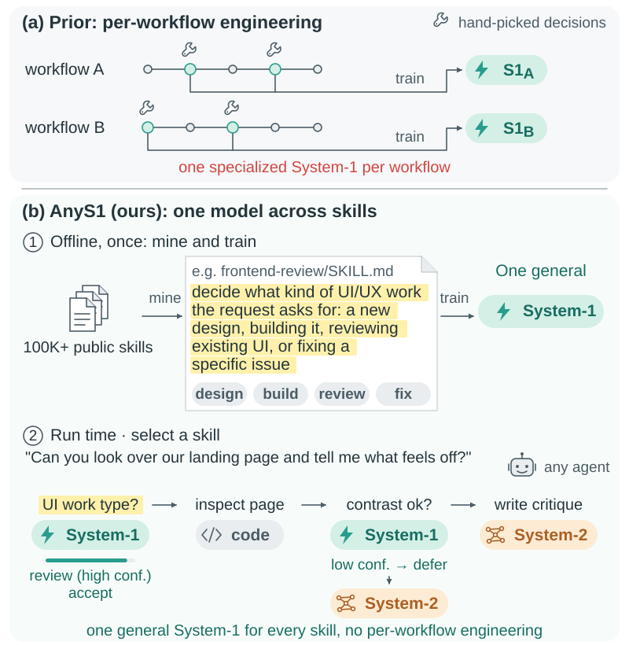
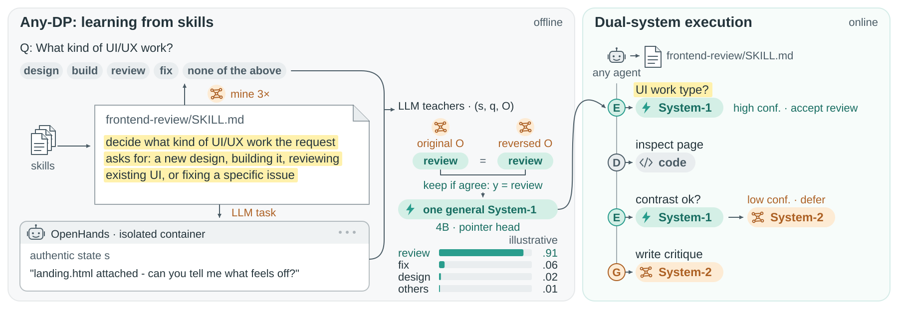
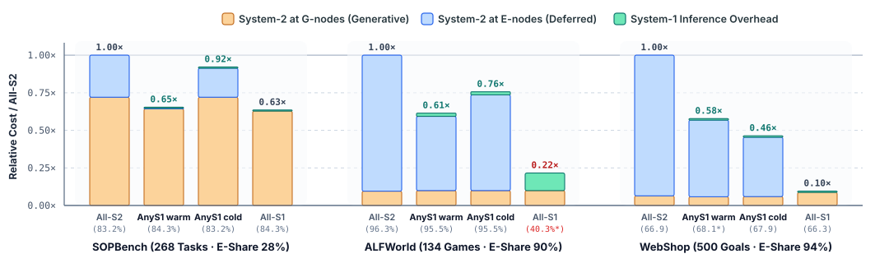

SKILL.md files once, train a single calibrated 4B pointer System-1 on 26K container-executed states (Any-DP), and execute any skill-guided workflow as a fast–slow dual system—cutting episode cost by 30–44% and model-call time by 38–48% without sacrificing task success.
Autonomous LLM agents excel at long-horizon tasks, yet querying a large model (System-2) at every step incurs high latency and cost—even though a large fraction of intermediate steps are merely bounded choices among known options. Existing dual-system agents offload such judgments to a lightweight decision model (System-1), but rely on decision points manually pre-defined for a single fixed workflow; meanwhile, general agents increasingly load procedural skills on demand whose instructions implicitly specify where to judge and among which options. We propose AnyS1, which mines grounded enumerable decision points across over 1,000 public skills and executes synthesized tasks in isolated containers to collect Any-DP (26K consensus-labeled execution states), training a single 4B pointer model with label smoothing so one System-1 serves unseen workflows. At run time, compiled workflows delegate an enumerable decision to System-1 in one forward pass when its confidence clears a threshold calibrated on unlabeled development runs (AnyS1warm) or transferred zero-shot (AnyS1cold), falling back to System-2 otherwise. Across three unseen benchmarks (SOPBench, ALFWorld, and WebShop) paired with DeepSeek-V4.1-Flash or GPT-6 Sol as System-2, AnyS1 preserves all-System-2 success while reducing episode cost by 30–44% and model-call time by 38–48% under AnyS1warm, and likewise maintains task reliability with zero target data under AnyS1cold.
Prior dual-system agents hard-code System-1 hooks for a single fixed workflow. Because general agents load procedural skills (SKILL.md) on demand—whose branches implicitly state where to judge and among which options—AnyS1 mines decision points across skills once to serve unseen workflows.

Steps fully determined by structured state—fixed tool calls, regex/file predicates, and state bookkeeping—execute directly as compiled Python code at zero token cost.
Bounded choices over candidate sets $(q, O, d)$ fixed in the skill or enumerable from runtime state $s$: scored in a single forward pass by our calibrated 4B System-1 and gated against $\tau$ (100% of mined skills contain $\ge 1$ E-node).
Open-ended synthesis, free-form code writing, search query formulation, and low-confidence fallbacks ($c(x) < \tau$) are reserved for the frontier System-2 model.
AnyS1 requires zero human annotations or third-party trajectory logs. Every decision point, executed trajectory state, and deferral threshold is derived from public SKILL.md repositories.

OptionInteractionHead and label smoothing ($\epsilon=0.1$). Stage 4 (§3.3): Gate each runtime E-decision in one forward pass ($c(x)\ge\tau$) under AnyS1warm or zero-shot AnyS1cold.
Three independent LLM passes extract D/E/G decision points anchored to verbatim substring quotes from SKILL.md. Self-consistent merging retains E points with support $\sigma(p)\ge 2$ and writes a 1-sentence definition $d(o)$ per option.
Each skill is turned into verifier-validated multi-stage container tasks with 2 distractor skills. OpenHands executes verified tasks in isolated containers ($T=0, 0.7$); verbatim observation states are labeled by forward/reverse teacher consensus ($y^1 = y^2$).
Built on Qwen3.5-4B-Base with rank-16 LoRA, a pointer scoring head with permutation-equivariant OptionInteractionHead (oc), and label smoothing ($\epsilon=0.1$) to prevent overconfidence on unseen skills.
Accepts System-1 in one forward pass when $c(x) = \max_o p_f(o\mid x) \ge \tau$ (chosen for $\ge 95\%$ agreement). Cold-start AnyS1cold transfers $\tau=0.918$ zero-shot; AnyS1warm fits $\tau$ on 50 unlabeled development runs.
SKILL.md to a Dual-System WorkflowA skill already says where the agent must choose and which options apply. The compiler marks each step as D (run as code), E (an enumerable choice that System-1 answers first), or G (open generation left to System-2). Pick an example or edit the source; hover any step to see where it lands.
This preview runs the offline structural parser in your browser (anys1 compile SKILL.md --offline). The full compiler
(anys1 compile)
extracts decision points with three grounded System-2 passes and merges them.
Skills state what to decide, but not the runtime observations in which those decisions arise. Inspect real records from Any-DP below to see how each mined decision point is instantiated via a verifier-checked multi-stage container task, captured as a verbatim trajectory state, and scored by our calibrated 4B System-1.
A gate that accepts System-1's answer when its probability is high enough requires probabilities that reflect how likely the answer is to be right—even on skills and states the model has not seen. We bake calibration into training via label smoothing ($\epsilon = 0.1$) and evaluate both unlabeled development-run and zero-target-run gates across two frontier System-2 backbones.
System-1 concatenates $(s, q, O, d(O))$ and scores all options in a single forward pass with a pointer head enhanced by a 1-layer no-position self-attention block (OptionInteractionHead, $d_p=256$):
Pick a System-2 backbone and a configuration to compare episode cost (split into S2 G-nodes, deferred S2 E-nodes, and System-1 overhead) and task success against All-S2:
A single episode covers every node type: System-2 handles open-ended generation, System-1 answers confident enumerable judgments in one forward pass, uncertain search is deferred back to System-2, and deterministic steps run as code.
mug, must be clean (wash at sinkbasin 1), destination = coffeemachine 1.countertop 1.yes — mug 2 is present with $c(x)=0.96 \ge \tau$ in one 24 ms forward pass.take mug 2 → go to sinkbasin 1 → clean mug 2 as compiled code.yes — proceed to placement ($c(x)=0.97$); the mug is placed and the episode succeeds.
All dual-system configurations use our 4B System-1 trained exclusively on Any-DP (1,072 skills, 25,986 states) and are paired with All-S2 via a shared request cache so that runs differ strictly where System-1 answers.
| Configuration | SOP Pass | SOP Sav. % | SOP Time (s) | ALF SR | ALF Sav. % | ALF Time (s) | WS Score | WS SR | WS Sav. % | WS Time (s) | Avg Δ pt | Avg Sav. % |
|---|---|---|---|---|---|---|---|---|---|---|---|---|
| System-2: DeepSeek-V4.1-Flash (Single-System Agent, Compiled Reference, and Dual-System AnyS1) | ||||||||||||
| System-2 Agent with Skills (Uncompiled) | 55.2 | 7.3× | 51.4 | 82.8 | 5.2× | 163 | 54.9 | 34.4 | 4.2× | 146 | −17.8 | 5.6× |
| Compiled Workflow (All-S2) | 83.2 | — | 25.0 | 96.3 | — | 21.3 | 66.9 | 38.0 | — | 29.0 | — | — |
Jev as System-1† (jev-1.14.0 API) |
84.0 | 2% | 23.9 | 96.3 | 15% | 20.5 | 67.1 | 38.6 | 28% | 17.3 | +0.3 | 15% |
| AnyS1warm (50 unlabeled dev runs) | 84.3 | 35% | 15.6 | 95.5 | 39% | 12.9 | 68.1* | 38.8 | 42% | 17.1 | +0.5 | 38% |
| AnyS1cold (transferred $\tau=0.918$, 0 runs) | 83.2 | 8% | 21.2 | 95.5 | 24% | 15.7 | 67.9 | 38.0 | 54% | 12.7 | +0.1 | 29% |
| System-2: GPT-6 Sol (Same 4B System-1 Trained Only on Any-DP, Paired with a Stronger Unseen System-2) | ||||||||||||
| System-2 Agent with Skills (Uncompiled) | 61.2 | 7.4× | — | 88.8 | 2.3× | — | 48.5 | 33.6 | 3.6× | — | −16.8 | 4.4× |
| Compiled Workflow (All-S2) | 82.1 | — | 124 | 96.3 | — | 193 | 70.6 | 41.8 | — | 81.4 | — | — |
| AnyS1warm (50 Sol dev episodes) | 82.5 | 35% | 75.8 | 95.5 | 44% | 101 | 70.4 | 40.0 | 30% | 49.4 | −0.2 | 36% |
| AnyS1cold (unchanged transferred $\tau=0.918$) | 82.5 | 14% | 107 | 94.0 | 29% | 134 | 70.1 | 40.4 | 49% | 33.3 | −0.8 | 31% |
Note: $^*$ indicates that the 95% paired bootstrap CI of the difference from All-S2 excludes 0. Sav. % reports episode cost savings (%) relative to All-S2 (System-2 + System-1, with self-hosted 4B System-1 priced at L4 GPU serving cost $0.0045/1k decisions and Jev at $0.042/1M input tokens; uncompiled System-2 rows show cost multiples). Time (s) reports critical-path model-call seconds per episode. Under both DeepSeek-V4.1-Flash and GPT-6 Sol, AnyS1warm preserves success (raising WebShop score by +1.3* CI under Flash) while reducing episode cost by 30–44% (mean 38% / 36%) and model-call time by 38–48%.
On held-out public container Dev states, our 4B System-1 trained solely on Any-DP reaches 83.8% accuracy (3-seed mean), beating the same model trained on 6,118 cross-task real trajectory states (76.8%, +7.0) and LLM-written synthetic states (65.0%, +18.8), while reaching 93.5% vs. 89.8% on SOPBench E-decisions.
Without label smoothing, plain cross-entropy keeps accuracy unchanged (82.3% vs. 82.4%) but puts probability $\ge 0.90$ on 88–93% of decisions instead of 44–76%. The dev threshold $\tau$ jumps from 0.904 to 0.998 and fails on ALFWorld: delegating 70% of E-decisions at only 83.0% agreement, versus 98.4% agreement with label smoothing.
All-S1), ALFWorld Collapses to 40.3%
When System-1 answers every E decision without a gate (All-S1), SOPBench is $+1.1$ at $0.63\times$ and WebShop is $-0.5$ score points at $0.10\times$, but ALFWorld collapses from 96.3% to 40.3% (75 games lost, 0 won; 71/77 losses diverge at a search node). Either AnyS1warm or AnyS1cold loses only 1 game (95.5%).
| Decision-Level Model (3 Seeds Each) | Dev (Held-Out) | SOP E (%) | ALF E (%) | ALF Search (%) |
|---|---|---|---|---|
| Zero-Shot & Commercial Baselines | ||||
| Kev-4B (Zero-Shot) | 57.8 | 88.7 | 56.9 | 16.3 |
| AgentDecision-4B | 74.6 | 88.2 | 69.5 | 40.4 |
| Qwen3.5-4B (Zero-Shot) | 71.4 | 91.7 | 70.9 | 44.0 |
| Qwen3.5-27B (Zero-Shot) | 85.9 | 93.8 | 77.2 | 56.8 |
| Jev (Commercial API) | 78.4 | 95.5 | 81.2 | 66.4 |
| Fine-Tuned on Alternative Supervision (4B-Base) | ||||
| LLM-Written Synthetic (S1-syn) | 65.0 | 91.7 | 63.6 | 28.6 |
| Cross-Task Real States Only (6,118 states) | 76.8 | 89.8 | 69.6 | 42.5 |
| Fine-Tuned on Any-DP (Ours · Self-Executed States Only) | ||||
| Any-DP · 25% of Skills (268 skills) | 80.7 | 92.1 | 69.7 | 40.7 |
| Any-DP · 50% of Skills (537 skills) | 84.7 | 93.0 | 68.3 | 37.6 |
| Any-DP · 100%, Standard Pointer Head | 82.7 | 93.7 | 68.0 | 37.8 |
| Any-DP · 100%, Option-Interaction Head (AnyS1 S1) | 83.8 | 93.5 | 68.9 | 41.5 |
| Gate & Calibration Ablation | SOPBench Pass / Cost | ALFWorld SR / Cost | WebShop Sc. / Cost |
|---|---|---|---|
| Online Deferral Gate Ablation (Same 4B System-1) | |||
| All-S2 (0% delegated) | 83.2% / 1.00× | 96.3% / 1.00× | 66.9 / 1.00× |
| All-S1 (No gate · 100% delegated) | 84.3% (+1.1) / 0.63× | 40.3% (-56.0*) / 0.22× | 66.3 (-0.5) / 0.10× |
| AnyS1cold (Transferred $\tau=0.918$) | 83.2% (0.0) / 0.92× | 95.5% (-0.7) / 0.76× | 67.9 (+1.0) / 0.46× |
| AnyS1warm (50 S2 dev runs) | 84.3% (+1.1) / 0.65× | 95.5% (-0.7) / 0.61× | 68.1 (+1.3*) / 0.58× |
| Offline Calibration Objective Study (Transfer to SOPBench & ALFWorld) | |||
| Label Smoothing ($\epsilon=0.1$, Ours) | ECE 0.094 · $\tau=0.904$ | SOP: 67% del / 98.4% agr | ALF: 42% del / 98.4% agr |
| Plain Cross-Entropy ($\epsilon=0$) | ECE 0.146 · $\tau=0.998$ | SOP: 81% del / 98.5% agr | ALF: 70% del / 83.0% agr |
| Cross-Entropy + Brier Loss | ECE 0.148 · $\tau=0.996$ | SOP: 83% del / 97.8% agr | ALF: 67% del / 86.7% agr |
All-S1), open-world ALFWorld search decisions collapse success from 96.3% to 40.3%; (2) without label smoothing ($\epsilon=0.1$), probability saturation ($\tau \to 0.998$) causes transferred thresholds to fail on ALFWorld (83.0% vs. 98.4% agreement).

All-S2 ($1.00\times$), split into System-2 at G-nodes, System-2 at E-nodes, and System-1 inference overhead across SOPBench, ALFWorld, and WebShop (Equation 1 decomposition).
System-1 latency is measured at batch size 1 on a single H100 GPU (bf16) over logged development E-states; System-2 and Jev latencies come from the online evaluation logs:
| Latency Metric | SOPBench | ALFWorld | WebShop |
|---|---|---|---|
| Seconds per Decision (Median, Batch Size 1) | |||
| System-2 (LLM E-Node Call) | 1.78 s | 1.51 s | 1.77 s |
| Jev API (4 Rotations) | — | 0.65 s | 0.67 s |
| System-1 (AnyS1 · 1 Forward Pass) | 0.022 s (22 ms) | 0.024 s (24 ms) | 0.032 s (32 ms) |
| Critical-Path Model-Call Time per Episode | |||
| All-S2 (Baseline Episode Model Time) | 25.0 s (1.00×) | 21.3 s (1.00×) | 29.0 s (1.00×) |
| AnyS1warm (Single-Pass Calibrated Gate) | 15.6 s (0.62×) | 12.9 s (0.61×) | 17.1 s (0.59×) |
Both dollar savings and wall-clock speedups follow the structural ceiling $s_E$ (the fraction of All-S2 cost spent on E-nodes):
$0.0045/1k decisions), System-1 adds $\kappa \le 2.1\%$ of baseline cost and only 22–32 ms per call (55–81× faster than System-2).| Bench | Decision Kind | Share | Delegated | Agree w/ S2 | Episodes Lost / Won |
|---|---|---|---|---|---|
| SOP | Intent (12–22 options) | 31% | 99% | 97.7% | 0 / 1 |
| SOP | Slot value ($\le 7$ options) | 21% | 100% | 99.5% | 0 / 1 |
| SOP | Follow-up role | 48% | 98% | 90.4% | 1 / 2 |
| ALF | Visible object check | 35% | 96% | 99.5% | 1 / 0 |
| ALF | Receptacle closed? | 9% | 90% | 94.4% | 0 / 0 |
| ALF | Search (where to look) | 43% | 17% | 58.6% | 0 / 0 |
| ALF | Receptacle type | 13% | 16% | 78.3% | 0 / 0 |
| Web | Relevance / match (yes/no) | 34% | 83% | 87.3% | 6 / 10 |
| Web | Description match (yes/no) | 7% | 13% | 72.7% | 0 / 1 |
| Web | Option checks | 26% | 57% | 94.0% | 2 / 1 |
| Web | Option value | 15% | 0% | — | 0 / 0 |
| Web | Product choice ($>7$ options) | 19% | 0% | — | 0 / 0 |
Key Insights: (1) Observation checks transfer across domains (90–100% delegated at 90–100% agreement), whereas open-world search and multi-item ranking have lower confidence and are deferred to System-2. (2) Under AnyS1warm, 166 of 500 WebShop episodes diverge from All-S2, yet task success changes in only 20 episodes (12 won, 8 lost).
| Skills Processed (SkillMD-138K) | 1,072 |
| Skill Categories | 16 |
| Extracted Decision Points (D / E / G) | 17,865 (21.3% D · 64.5% E · 14.2% G) |
| └ Enumerable Decision Points (E) | 11,523 (100% of skills have $\ge 1$ E-point) |
| Synthesized Multi-Stage Tasks | 2,846 (verifier-validated + 2 distractor skills) |
| Consensus-Labeled States ($|\mathcal{D}|$) | 25,986 (median 21 states/skill; 89.2% teacher agreement) |
| Options per Decision Point | Median 3; 94.5% have $2\text{--}7$ options (6.7% pick none) |
| Cross-Family Blind Audit (500 States) | 98.0% label correct (99.8% defensible); 97.4% D/E/G type correct |
@inproceedings{anys1_2027,
title = {Thinking Fast, Anywhere: One System-1 for the Decision Points of Any Agent Workflow},
booktitle = {Proceedings of the Annual Meeting of the Association for Computational Linguistics (ACL)},
year = {2027},
url = {https://github.com/middle-chunjie/AnyS1}
}